La simulación es una técnica de creciente importancia en muchos campos teóricos y aplicados. En esta asignatura se discutirá una de las varias clases de simulación: la simulación de procesos estocásticos discretos. Esta primera conferencia caracteriza el tipo de simulaciones que serán discutidas en el curso y para ello se discuten los términos y conceptos que permiten esta caracterización: modelación, sistemas, sistemas discretos, estocásticos, variables, etc. Se comentan además las ventajas y desventajas de la simulación y se hace una breve descripción de cómo trabaja y cómo se usa esta técnica.
El programa de la asignatura incluye los siguientes temas
Los detalles del Programa de la asignatura pueden verse en la Intranet de la Facultad. SIMULACIÓN
El concepto de simulación tiene múltiples acepciones. El uso general del término puede responder a lo siguiente "Simulación es un acto o proceso que brinda la apariencia o efecto de alguna parte de la realidad...Simular es obtener la esencia sin la realidad..." [1]. Este concepto puede ser muy general y válido pero poco operacional. Además tiende a confundir la "modelación" y la "simulación" porque en última instancia "modelar" es obtener también la esencia.
Si se pretende conceptualizar "modelación-simulación" como un proceso único, puede ser efectivo la siguiente definición informal [2]: "Modelación y simulación es el conjunto de actividades asociado a la construcción de modelos del mundo real y su simulación mediante computadoras con el objetivo de dar solución a determinados procesos"
Según esta idea:
§ La modelación se ocupa de la relación entre sistemas reales y el modelo
§ La simulación se ocupa de la relación entre los modelos y la computadora.
Esta definición informal de "modelación-simulación" pone en foco además que se tienen tres componentes esenciales en el proceso: el sistema real, el modelo y la computadora. Para algunos autores [2] son cinco las componentes esenciales: el sistema real, el marco experimental, el modelo base, el modelo simplificado y la computadora.
Sistema Real

Básicamente, la simulación podemos utilizarla en dos casos:
* Cuando el sistema existe: En este caso, la simulación se utiliza como herramienta de análisis para predecir los efectos y las alteraciones que los cambios introducidos produzcan sobre el rendimiento del sistema.
* Cuando el sistema no está construido: En este caso, la simulación se utiliza como herramienta de diseño para predecir el rendimiento de nuevos sistemas bajo un diverso grupo de condiciones y circunstancias.
El llamado Sistema Real
Es una fuente de datos a observar. Puede ser un sistema físico, químico, biológico, económico, social, etc., y en principio debe ser analizable a través de ciertas "variables". A los fines de la simulación, su funcionamiento debe caracterizarse por funciones que relacionan variables de "entrada" y "salida" y pueden existir además ciertas variables "de estado" no necesariamente observables, de acuerdo al esquema anterior
Caracteriza un conjunto limitado de circunstancias bajo las cuales se experimenta o se observa el sistema real. Para un mismo sistema real pueden existir varios marcos experimentales de interés. La validez de un modelo de simulación será siempre relativa a un marco experimental dado.
Es teóricamente un modelo capaz de reflejar todo el comportamiento del sistema real, es decir un modelo válido en cualquier marco experimental permisible
Es un modelo que se construye a partir del modelo base, simplificando componentes e interacciones y de acuerdo a un marco experimental concreto.
Es el dispositivo con cuya ayuda se generan los "pares" de entrada/salida del modelo simplificado. Normalmente estas trayectorias se ejecutan paso a paso o continuas en el tiempo y a este proceso se le denomina "simulación". En la simulación de procesos estocásticos discretos como los que vamos a estudiar, se usa siempre una computadora digital.
E.I: El Anexo A incluye un ejemplo de problema en el cual se caracterizan el modelo base, el marco experimental y el modelo simplificado.
Definición más precisa de simulación: "Simulación es una técnica numérica para conducir experimentos sobre una computadora digital que envuelve ciertos tipos de modelos matemáticos y lógicos que describen el comportamiento de sistemas físicos, químicos, biológicos, económicos o sociales, a lo largo del tiempo".
Viendo la simulación como técnica de modelación o de experimentación, tiene como ventajas, las siguientes:
1. Tratabilidad.
Esto significa la posibilidad de tratar sistemas en los cuales es imposible experimentar ampliamente con la realidad por razones técnicas, económicas, humanitarias, etc. R. Hing tiene ejemplos fehacientes relacionados con investigaciones de física nuclear. R. Grau tiene ejemplos interesantes con epidemias.
Esta ventaja se extiende a problemas cuya experimentación no es tan "peligrosa" pero cuestionable desde el punto de vista económico.
2. Facilidades para la experimentación controlada:
- permite la consideración de muchos factores
- permite la manipulación de muchas unidades individuales
- permite el manejo de políticas alternativas
3. La simulación es una buena herramienta de entrenamiento (hay por ejemplo programa de simulación del pilotaje de un avión)
4. El proceso como tal de la simulación permite adquirir información intrínseca sobre los procesos, que tiene su valor, independientemente del proceso de simulación
5. La simulación puede hacer que una gerencia "mediocre" se haga más efectiva
La simulación tiene como desventajas:
1. Es muy costosa.
El costo más elevado es el de los recursos humanos, pues se requiere de muchos especialistas altamente calificados. La simulación requiere de computadoras suficientemente rápidas y de alta capacidad. Ello se puede lograr hoy en día con microcomputadoras pero de la última generación y preferiblemente conectadas en red con un servidor suficientemente potente. La simulación requiere a veces de otros recursos escasos y caros, digamos sensores.
Fácilmente el costo de la simulación de un proceso más o menos complicado se eleva a cientos de miles de dólares.
2. Requiere de un tiempo largo para el desarrollo
Una simulación satisfactoria de un proceso más o menos complicado requiere no menos de 1 o 2 años con varios especialistas.
3. Requiere a veces de grandes estudios de campo, que por demás no son usualmente del gusto de especialistas
4. Hay una última desventaja sutil:
La simulación existe solo como un conjunto de programas y por tanto los jefes no "ven" cómo ella opera realmente. Por suerte ellos normalmente aceptan los resultados sin demasiada oposición; pero cualquier resultado negativo pasa a ser "determinante" aunque en realidad no lo es, o está asociado a un detalle fácilmente reparable.
Se ha definido el objeto de estudio de la asignatura como la simulación de sistemas estocásticos discretos. Ello exige una definición de sistemas, al menos desde el punto de vista de la teoría de la simulación.
"Un sistema es una colección de componentes interdependientes o que interactúan regularmente (a los fines de simulación se tratan componentes tales como máquinas, personas, información y comunicaciones) actuando como una unidad para alcanzar una misión implícita o explícita".
|
Ejemplos: |
Componentes |
Interacciones |
|
Puestos de trabajo |
Computadora |
el operador lee la libreta de notas para ver que tiene que calcular presiona botones sobre la calculadora para efectuar el calculo lee la respuesta de la calculadora usa el lápiz para anotar en la libreta o hacer interpretaciones |
|
Operador |
||
|
Libreta de notas |
||
|
Lápiz |
||
|
Clase práctica de Estadística en un laboratorio de Computación |
10 Puestos de trabajos |
Nota: la misión de los subsistemas que representan los puestos de trabajo es asignada por el profesor. La misión de la CP puede no estar definida explícitamente pero está claro que hay una misión implícita. |
|
Profesor |
||
|
Medios audiovisuales |
Clasificaciones de los sistemas
§ Continuos: Las variables pueden variar continuamente a lo largo del tiempo(variables que pueden tomar valores reales en un intervalo o un conjunto dado de intervalos en cada instante de tiempo )
§ Discretos: incluyen variables que pueden tomar solamente valores particulares en un conjunto de alternativas.
§ Atendiendo a la forma que cambia de un estado a otro o lo que es lo mismo, los valores que pueden ser tomados por las variables que caracterizan el estado del sistema
La "clase práctica de Estadística en el laboratorio de computadoras" es un sistema discreto porque el sistema cambia de uno a otro estado en la medida que se realizan actividades en una sucesión de pasos individuales. Por ejemplo, el operador o estudiante en cada puesto de trabajo está asociado a una serie de actividades discretas: lee de la libreta, pulsa el teclado, hace notas en el papel, estudia los resultados, oye al instructor, está distraído, etc. En cada momento particular su estado puede ser especificado por una variable que indica en cuál de estas actividades está enfrascado.
\El operador en cada conjunto de trabajo está asociado a una serie de actividades discretas:
|
Lee la libreta |
En cada momento particular su estado puede ser especificado por una variable en cual de estas actividades está enfrascado |
|
Pulsa el teclado |
|
|
Hace notas en el papel |
|
|
Estudia los resultados |
|
|
Oye al instructor |
|
|
Está distraído |
Sistema de atención a usuarios a una oficina en el que se pretende describir el estado de los empleados y el tiempo que demora cada cliente en ser atendido.
La recepcionista puede indicarse por una variable cuyos valores discretos muestra
§ Si está conversando con un cliente
§ Llamando por teléfono
§ Llenando ciertos documentos
§ Esperando sin nada que hacer
§ Está fuera de su puesto de trabajo
Como un ejemplo de sistema continuo pudiera considerarse el formado por un aeroplano en vuelo. En tal sistema pudiera ser de interés la potencia de los motores, la dirección y velocidad del viento, la posición de las superficies de control, la posición y velocidad del aeroplano, todas las cuales son continuas.
Normalmente la modelación-simulación de sistemas continuos se logra con modelos matemáticos bastante complicados, basados por ejemplo en sistemas de ecuaciones diferenciales, que son manipulados eficientemente por computadoras.
Muchas veces y a los fines de la simulación se "discretiza" el proceso, haciendo mediciones en intervalos regulares de tiempo para procesar por computadoras digitales.
Vuelo del aeroplano
|
Estados |
Es útil para en estudio de tráfico aéreo pero no para simular características de vuelo del aeroplano o la destreza del piloto |
|
Desemboque |
|
|
Vuelo sobre tierra |
|
|
Sobre la tierra |
|
|
Aterrizaje |
Si la salida puede ser predicha completamente a partir del estado inicial del sistema, este es determinístico; pero si la salida responde a una entrada dada con una cierta variación de acuerdo a una distribución, el sistema es estocástico.
Pero el sistema, por ejemplo, de la oficina de atención, es estocástico, porque los tiempos de espera o atención de un cliente varían acorde con cierta distribución que debe ser estudiada.
Finalmente, se reitera que el objeto de estudio del presente curso es la modelación de sistemas estocásticos discretos, Modelos de sistemas
Motor del Sistema
La preparación de los modelos en una parte integral del desarrollo de la modelación y simulación.
Tipos de modelos
· Matemático (Ojo)
· Físicos
· Descriptivos variables
· Diagramas de flujo
· Computacionales
Ø Por ejemplo, los orientados a cortes transversales en el tiempo, intentan ver como cambia el sistema en todos sus aspectos a los largo del tiempo, digamos en tiempos discretos t1, t2,..., tn. Frecuentemente se utilizan para esto intervalos regulares de tiempo: ti-ti-1=h (con h constante).
Ø Los modelos orientados a eventos focalizan su atención sobre "eventos" vistos como "cambios en el estado de las variables" en "ciertos instantes de tiempo" pero no necesariamente regulares. En este caso, el sistema se observa de un evento a otro, hasta que se complete una secuencia predeterminada de tales eventos o se alcance un "evento crítico" (en lugar de un "tiempo tn" final de la simulación).
EJEMPLOS:
Por ejemplo, las operaciones sobre una oficina que atiende clientes pueden ser vistas por ambas tendencias. En el enfoque "orientado a eventos", la oficina se ve como una secuencia de servicios o procesos relacionados con los clientes. Cada evento es un paso en la interacción de la oficina con sus clientes. Una cadena de eventos comienza con el arribo de un cliente. Este evento conduce a una interacción con la recepcionista. Los siguientes pasos del cliente dentro de la oficina se ven como una cadena de eventos, cada uno de los cuales genera el siguiente. El tiempo transcurrido entre dos eventos se observa simplemente a lo largo de este recorrido pero no es observado ni fijado "a priori".
En la modelación orientada a "cortes de tiempo" del mismo problema, la oficina se observa a intervalos fijos y regulares de tiempo, y en cada momento se caracteriza el estado de todos los elementos del modelo. Puede ocurrir incluso, que algunos componentes (digamos el estado de la recepcionista del piso "n") no haya cambiado de un estado a otro.